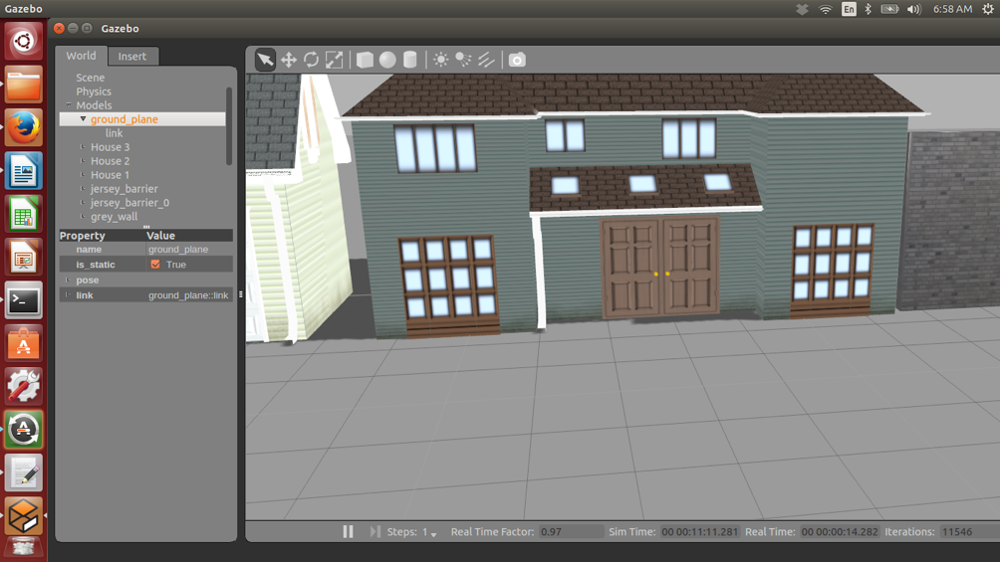
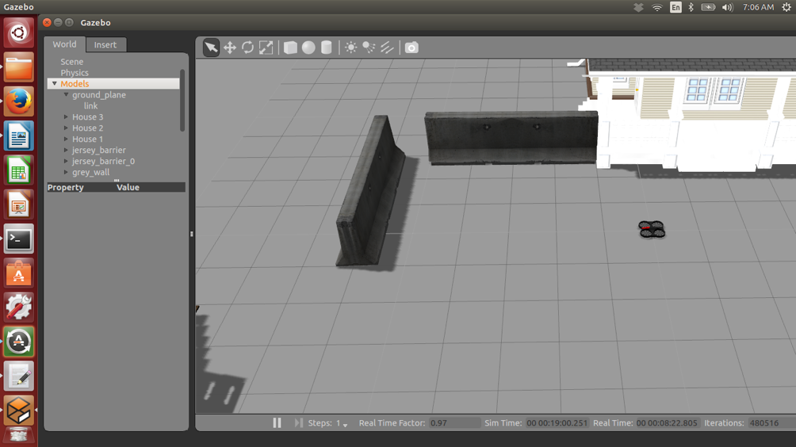
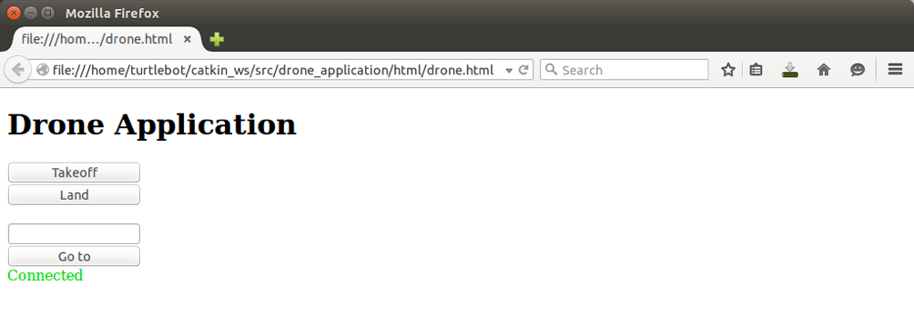
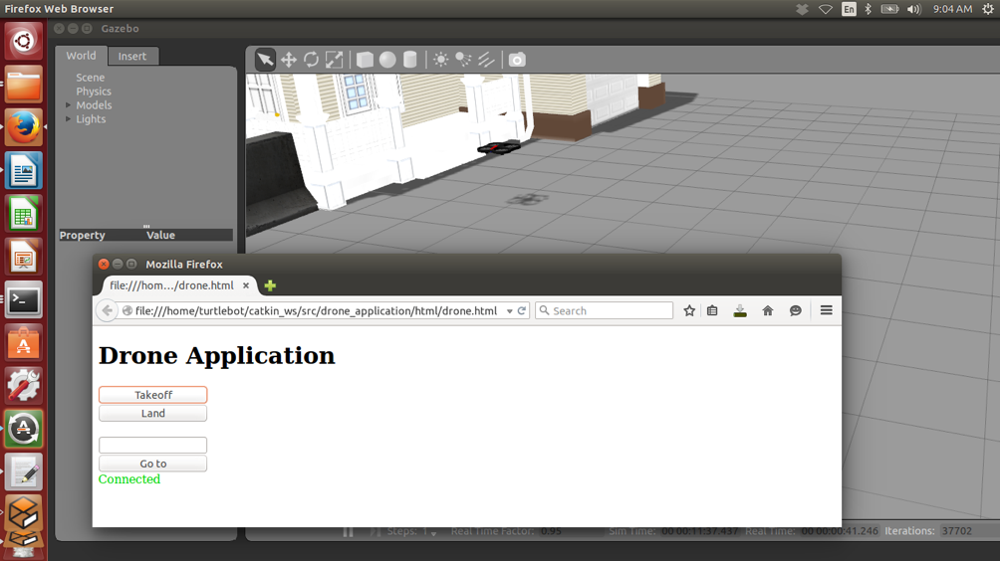

Simulation of AR Parrot 2
In this tutorial you will learn how to use the Gazebo simulation on AR Parrot 2 with ROS.
Note
This tutorial tested on ROS indigo under Ubuntu 14.04 LTS.
Required Packages
Install and compile following packages:
- ardrone_autonomy [http://wiki.ros.org/ardrone_autonomy] is the ROS driver for Parrot ARDrone 1.0 and 2.0.
- tum_simulator [http://wiki.ros.org/tum_simulator] contains the implementation of a gazebo simulator for the Ardrone 2.0
Testing the simulator
Create new package (e.g. drone_application)
catkin_create_pkg drone_application std_msgs rospy roscpp
To run simulator, create a launch file (e.g: test_simulator.launch) and paste following lines:
<launch>
<include file="$(find gazebo_ros)/launch/empty_world.launch">
<arg name="world_name" value="$(find cvg_sim_gazebo)/worlds/ardrone_testworld.world"/>
</include>
<include file="$(find cvg_sim_gazebo)/launch/spawn_quadrotor.launch" >
<arg name="model" value="$(find cvg_sim_gazebo)/urdf/quadrotor_sensors.urdf.xacro"/>
</include>
</launch>
In terminal:
roslaunch drone_application test_simulator.launch
If everything is OK you will see following window:
You can turn the view until you see the robot
In new terminal you can control the robot by sending messages through topics, for example to takeoff:
rostopic pub -1 ardrone/takeoff std_msgs/Empty
To land:
rostopic pub -1 ardrone/land std_msgs/Empty
Here is a list of commands that you could try :
# fly forward
rostopic pub -r 10 /cmd_vel geometry_msgs/Twist '{linear: {x: 1.0, y: 0.0, z: 0.0}, angular: {x: 0.0,y: 0.0,z: 0.0}}'
# fly backward
rostopic pub -r 10 /cmd_vel geometry_msgs/Twist '{linear: {x: -1.0, y: 0.0, z: 0.0}, angular: {x: 0.0,y: 0.0,z: 0.0}}'
# fly to left
rostopic pub -r 10 /cmd_vel geometry_msgs/Twist '{linear: {x: 0.0, y: 1.0, z: 0.0}, angular: {x: 0.0,y: 0.0,z: 0.0}}'
# fly to right
rostopic pub -r 10 /cmd_vel geometry_msgs/Twist '{linear: {x: 0.0, y: -1.0, z: 0.0}, angular: {x: 0.0,y: 0.0,z: 0.0}}'
# fly up
rostopic pub -r 10 /cmd_vel geometry_msgs/Twist '{linear: {x: 0.0, y: 0.0, z: 1.0}, angular: {x: 0.0,y: 0.0,z: 0.0}}'
# fly down
rostopic pub -r 10 /cmd_vel geometry_msgs/Twist '{linear: {x: 0.0, y: 0.0, z: -1.0}, angular: {x: 0.0,y: 0.0,z: 0.0}}'
# counterclockwise rotation
rostopic pub -r 10 /cmd_vel geometry_msgs/Twist '{linear: {x: 0.0, y: 0.0, z: 0.0}, angular: {x: 0.0,y: 0.0,z: 1.0}}'
# clockwise rotation
rostopic pub -r 10 /cmd_vel geometry_msgs/Twist '{linear: {x: 0.0, y: 0.0, z: 0.0}, angular: {x: 0.0,y: 0.0,z: -1.0}}'
# stop
rostopic pub -r 10 /cmd_vel geometry_msgs/Twist '{linear: {x: 0.0, y: 0.0, z: 0.0}, angular: {x: 0.0,y: 0.0,z: 0.0}}'
# switch camera
rosservice call /ardrone/togglecam
# The output camera
rosrun image_view image_view image:=/ardrone/image_raw
# The front camera
rosrun image_view image_view image:=/ardrone/front/image_raw
# The buttom camera
rosrun image_view image_view image:=/ardrone/bottom/image_raw
# The height senso
rostopic echo /sonar_height
#The navigation info
rostopic echo /ardrone/navdata
#A launch file for joystick drivers and image view nodes
roslaunch cvg_sim_test demo_tool.launch
For more details about the commands and package visit: tum_simulator [http://wiki.ros.org/tum_simulator]
Control the robot from your code in python
To write simple code to takeoff, create your .py file (e.g: takeoff.py) and paste following code:
#!/usr/bin/env python
import rospy
from std_msgs.msg import String
from std_msgs.msg import Empty
def takeoff():
pub = rospy.Publisher("ardrone/takeoff", Empty, queue_size=10 )
rospy.init_node('takeoff', anonymous=True)
rate = rospy.Rate(10) # 10hz
while not rospy.is_shutdown():
pub.publish(Empty())
rate.sleep()
if __name__ == '__main__':
try:
takeoff()
except rospy.ROSInterruptException:
pass
Launch the simulator:
roslaunch drone_application test_simulator.launch
Run you code in new terminal:
rosrun drone_application takeoff.py
Use web interface with the simulator
Install roslibjs from this repository [https://github.com/RobotWebTools/roslibjs].
Create your html file (e.g. drone.html) and paste the following code:
<!DOCTYPE html>
<html>
<head>
<meta charset="utf-8" />
<script src="http://cdn.robotwebtools.org/EventEmitter2/current/eventemitter2.min.js"></script>
<script src="../build/roslib.js"></script>
<script>
// Connecting to ROS
// -----------------
var ros = new ROSLIB.Ros();
// If there is an error on the backend, an 'error' emit will be emitted.
ros.on('error', function(error) {
document.getElementById('connecting').style.display = 'none';
document.getElementById('connected').style.display = 'none';
document.getElementById('closed').style.display = 'none';
document.getElementById('error').style.display = 'inline';
console.log(error);
});
// Find out exactly when we made a connection.
ros.on('connection', function() {
console.log('Connection made!');
document.getElementById('connecting').style.display = 'none';
document.getElementById('error').style.display = 'none';
document.getElementById('closed').style.display = 'none';
document.getElementById('connected').style.display = 'inline';
});
ros.on('close', function() {
console.log('Connection closed.');
document.getElementById('connecting').style.display = 'none';
document.getElementById('connected').style.display = 'none';
document.getElementById('closed').style.display = 'inline';
});
// Create a connection to the rosbridge WebSocket server.
ros.connect('ws://localhost:9090');
// Write your code here, to publish or subscribe in topics
function Takeoff() {
// First, we create a Topic object with details of the topic's name and message type.
var takeoff = new ROSLIB.Topic({
ros : ros,
name : 'ardrone/takeoff',
messageType : 'std_msgs/Empty'
});
// Then we create the payload to be published. The object we pass in to ros.Message matches the
// fields defined in the geometry_msgs/Twist.msg definition.
var msg = new ROSLIB.Message('');
// And finally, publish.
takeoff.publish(msg);
}
function Land() {
// First, we create a Topic object with details of the topic's name and message type.
var land = new ROSLIB.Topic({
ros : ros,
name : 'ardrone/land',
messageType : 'std_msgs/Empty'
});
// Then we create the payload to be published. The object we pass in to ros.Message matches the
// fields defined in the geometry_msgs/Twist.msg definition.
var msg = new ROSLIB.Message('');
// And finally, publish.
land.publish(msg);
}
function GoTo(){
var TheForm;
TheForm = document.movingForm;
var coordinate = new ROSLIB.Topic({
ros : ros,
name : 'tum_ardrone/com',
messageType : 'std_msgs/String'
});
// Then we create the payload to be published. The object we pass in to ros.Message matches the
// fields defined in the geometry_msgs/Twist.msg definition.
var msg = new ROSLIB.Message({data : "c goto 20 20 5 2"});
// And finally, publish.
coordinate.publish(msg);
}
</script>
</head>
<body>
<h1>Drone Application</h1>
<input type="button" value= "Takeoff" onclick="Takeoff()" style="width:150px"/>
<br>
<input type="button" value= "Land" onclick="Land()" style="width:150px"/>
<form name=movingForm>
<input type="text" name= "coordinate" style="width:142px"/>
<br>
<input type="button" value= "Go to" onclick="GoTo()" style="width:150px"/>
<form/>
<br>
<div id="statusIndicator">
<p id="connecting">
Connecting to rosbridge...
</p>
<p id="connected" style="color:#00D600; display:none">
Connected
</p>
<p id="error" style="color:#FF0000; display:none">
Error in the backend!
</p>
<p id="closed" style="display:none">
Connection closed.
</p>
</div>
</body>
</html>
In new terminal:
roslaunch rosbridge_server rosbridge_websocket.launch
This message will appear if it works fine
[INFO] [WallTime: 1455515889.569402] Rosbridge WebSocket server started on port 9090
Then open your html file, here it tested using firefox
If you connected correctly, you will see message look like
[INFO] [WallTime: 1455516444.565463] Client connected. 1 clients total.
Launch the simulator:
roslaunch drone_application test_simulator.launch
Test the takeoff command by clicking the Takeoff button
Using tum_ardrone package
Install tum_ardrone [http://www.ros.org/wiki/tum_ardrone] package.
To run simulator, create a launch file (e.g: test_tum_ardrone.launch) and paste following lines:
<launch>
<arg name="droneip" default="192.168.1.1" />
<node name="ardrone_driver" pkg="ardrone_autonomy" type="ardrone_driver" output="screen" args="-ip $(arg droneip)">
<param name="navdata_demo" value="False" />
<param name="realtime_navdata" value="True" />
<param name="realtime_video" value="True" />
<param name="looprate" value="30" />
</node>
<include file="$(find gazebo_ros)/launch/empty_world.launch">
<arg name="world_name" value="$(find cvg_sim_gazebo)/worlds/ardrone_testworld.world"/>
</include>
<include file="$(find cvg_sim_gazebo)/launch/spawn_quadrotor.launch" >
<arg name="model" value="$(find cvg_sim_gazebo)/urdf/quadrotor_sensors.urdf.xacro"/>
</include>
<node name="drone_stateestimation" pkg="tum_ardrone" type="drone_stateestimation">
</node>
<node name="drone_autopilot" pkg="tum_ardrone" type="drone_autopilot">
</node>
<node name="drone_gui" pkg="tum_ardrone" type="drone_gui">
</node>
</launch>
In terminal:
roslaunch drone_application test_tum_ardrone.launch
This launch file will start the simulator in gazebo as before and ardrone_driver along with tum_ardrone nodes.
The Ar Drone can be controlled using tum_ardrone_GUI